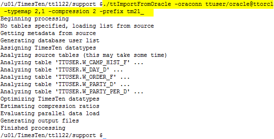
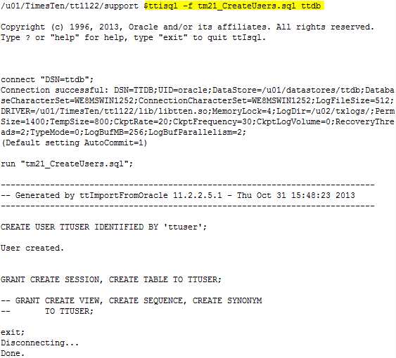
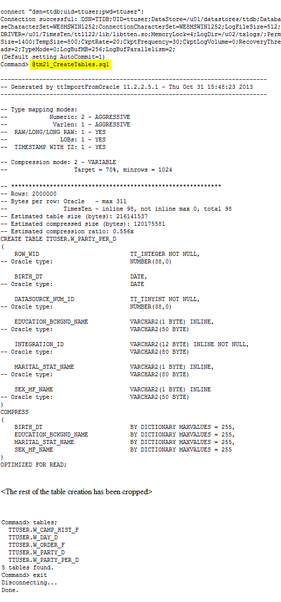
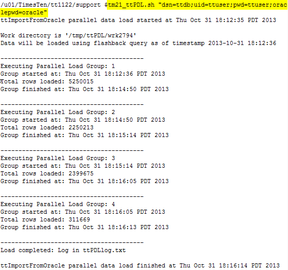
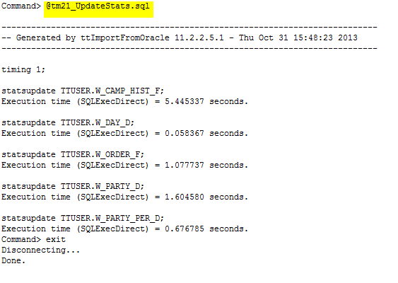

This tutorial provides a step-by-step example on how to use the TimesTen command line utility ttImportFromOracle to efficiently import tables from an Oracle Database to a TimesTen database. In particular, this utility is recommended when there is a need to load detail tables from an Oracle data warehouse to the TimesTen database running in the Oracle Exalytics In-Memory machine.
ttImportFromOracle analyzes a given table in the Oracle Database, recommends space-efficient data types, identifies columns for columnar compression and generates DDL for the table and indexes in TimesTen for optimal memory footprint in the TimesTen database. ttImportFromOracle should be run at least once per source table. ttImportFromOracle also generates optimized scripts to load the source data in parallel, using multiple instances of the TimesTen ttLoadFromOracle builtin procedure.
The example on this page references a sample Oracle database called ttorcl. The Oracle database schema belongs to a user called ttuser and this user has 5 tables which need to be imported into a TimesTen database called ttdb.
Note. The utility ttImportFromOracle should be downloaded from here .
Prerequisites
ttImportFromOracle should be run from the server where the TimesTen database resides. Ensure the following perequisites are met:
- A valid Oracle Database net service name has been configured on the TimesTen database server pointing to the source Oracle database. ttorcl is the net service name used in this example.
- The target TimesTen database is using the same database character set as that for the source Oracle database. Different database character sets will result in an error during the data loading step.
1. Running ttImportFromOracle to analyze the source tables
ttImportFromOracle analyzes the specified tables in the Oracle Database and generates scripts to support the importing of the tables into the specified TimesTen database.
There are various options that the users can specify. The examples below demonstrate the most common scenarios. Please refer to the ttImportFromOracle readme for more details on the available options and parameter settings.
Examples:
The following command performs data type mapping on the NUMBER columns, and data compression evaluation, for all tables belonging to the Oracle database user ttuser.
$ ./ttImportFromOracle -oraconn ttuser/oracle@ttorcl -typemap 1 -compression 2 -prefix pf
where
-oraconn specifies the username/password and the net service name for the source Oracle database.
-typemap 1 specifies that NUMBER columns should be evaluated for data type mapping (without scanning the data in the columns).
-compression 2 specifies that columnar compression should be evaluated. The utility will determine candidates for compression based on the data cardinality. (Note that columnar compression requires TimesTen for Exalytics license).
-prefix pf is an optional parameter used for adding a filename prefix to all the generated files.
The following command performs data type mapping on NUMBER columns by scanning the actual data stored in the NUMBER columns for table ttuser.orders.
$ ./ttImportFromOracle -oraconn ttuser/oracle@ttorcl -typemap 2 -tables orders
The following command performs data type mapping on NUMBER, VARCHAR2 and NVARCHAR2 columns by analyzing the data stored in these columns for all tables belonging to the user ttuser. Columns will also be evaluated for space saving using columnar compression. All of the generated files will use a prefix tm21_.
$ ./ttImportFromOracle -oraconn ttuser/oracle@ttorcl -typemap 2,1 -compression 2 -prefix tm21_
Here is the sample output from running the above command showing the various processing stages:

2. Importing the tables from the Oracle Database
After running ttImportFromOracle, various scripts are created for the user. Below is a listing of the files generated:

Description of selected files:
| CreateUsers.sql | - a SQL script to create the users in a TimesTen database. Note the default password for these users is set to the same as the username; these should be changed to use a more secure password. |
| CreateTables.sql | - a SQL script to create all the tables in the TimesTen database with data type mapping changes and compression clauses included. This script also contains the estimated table sizes. |
| ttPDL.sh | - a shell script to load the table data using parallel data load running ttLoadFromOracle |
| CreateIndexes.sql | - a SQL script to create all the indexes, primary keys and foreign keys. |
| UpdateStats.sql | - a SQL script to update the statistics on the tables. |
| ttSizing.sh | - a shell script to run ttSize to output sizing information on the created tables. |
A typical sequence for running the scripts to import the tables to TimesTen:
- Run CreateUsers.sql to create the required users in the TimesTen database.
- Run CreateTables.sql to create the tables.
- Run ttPDL.sh to load the data into TimesTen (this script invokes ttLoadFromOracle).
- Run CreateIndexes.sql to create the same Oracle databases indexes and constraints in the TimesTen database.
- Run UpdateStats.sql to update the table statistics.
Below is the sample output from running the above scripts to create and import the ttuser tables into the TimesTen database ttdb :
1.Create Users in the TimesTen database

2.Create Tables in the TimesTen database
3.Load Data from the Oracle database into the TimesTen database
4.Create Indexes on the TimesTen tables
5.Update Statistics on the TimesTen tables